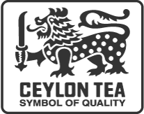

Symbol of quality

The finest cup of tea, guaranteed.
In over one hundred and fifty years, the name Ceylon had become synonymous with the world’s finest tea. In the world’s eye and tongue, Ceylon was tea and tea was Ceylon.
What Rolls Royce
is to cars, Rolex is to watches, Havana is to cigars and Scotland is to whisky; Ceylon is to tea.
The legendary lion of the Sri Lankan flag was introduced to the Ceylon Tea logo, to guard this commitment – the symbol of quality.